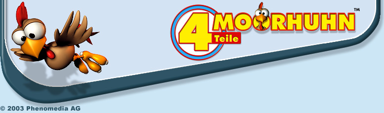

|
|
 |
 |
» Anforderungen
» Das Bonusmaterial
» So funktionieren die Moorhuhn Spiele
» Probleme mit einem der Spiele
» Probleme mit DirectX
» Kann ich einzelne Komponenten nachträglich installieren oder deinstallieren?
» Wie kann ich alle Komponenten deinstallieren?
» Eines der Spiele lässt sich nicht starten.
» In einem der Spiele reagiert meine Maus nicht.
» Warum habe ich im Spiel keinen Sound?
» Ich kann keine Highscore-Einträge mehr machen.
» Wie funktioniert der Online-Highscore in Moorhuhn 2 und 3?
» Die Ladezeiten zwischen Hauptmenü und Spiel sind zu lang. Was kann ich tun?
» Kann ich den Boss-Screen neu einrichten?
» Ich kann unter Windows 2000 eines der Spiele nicht installieren. Was kann ich tun?
» Anforderungen
Um eines der Moorhuhn-Spiele zu spielen, benötigst du mindestens DirectX 3.0. Wir empfehlen dir jedoch eine neuere Version zu installieren, die auf dieser CD-ROM
enthalten ist. Die technischen Mindestvoraussetzungen variieren von Spiel zu Spiel. Diese und andere Informationen zu den einzelnen Spielen bekommst du
unter dem Menüpunkt » ÜBER DIE SPIELE.
» Das Bonusmaterial
Um dieses CD-ROM noch interessanter zu gestalten, haben wir noch einiges an Bonus-Material hinzugefügt. Hier habt ihr eine kleine Liste mit all den Sachen,
die ihr euch, falls noch nicht geschehen, auf die Festplatte installieren könnt. Alle installierten Elemente des Bonusmaterials können über das Startmenü
aufgerufen werden.
Die Moorhuhn 1 Trainingsareas
Ein Schießstand für alle, die ihre Fähigkeiten als Jäger erst noch ein wenig testen und verbessern müssen, bevor sie in die freie Computer-Wildbahn entlassen werden.
Das Moorhuhn 2 Puzzle
Eine kleine Ablenkung für alle Bastler unter den Jägern. Geduld und ein gutes Auge werden hier auf die Probe gestellt.
Trailer-Show
Moorhuhn 3 - Es gibt Huhn: Die mittlerweile zum Klassiker geratene Ode an das beringte Huhn durfte hier natürlich nicht fehlen.
Moorhuhn Kart: Der Trailer zum aktuellen Streich aus dem Hühnerstall. Die Vorliebe des Machers für Krimiserien aus den 60ern und 70ern lässt sich wohl kaum verleugnen.
Moorhuhn Kart XS
Das Moorhuhn einmal nicht vogelfrei in der Wildnis, sondern rasend auf der Kart-Bahn. Weitere Informationen dazu findest du
» hier!
» So funktionieren die Moorhuhn Spiele
Die Moorhuhn Spiele funktionieren alle nach dem gleichen Prinzip: Geschossen wird mit der linken und nachgeladen mit der rechten Maustaste.
Die Bewegungen nach links und rechts funktioniert grundsätzlich mit der Maus und den Cursor-Tasten deiner Tastatur. Wenn du beides miteinander kombinierst, kannst du
dieses seitliche Scrollen noch ein wenig beschleunigen. Mit der ESC-Taste kannst aus einem laufenden Spiel ins Hauptmenü wechseln oder das Spiel komplett beenden.
Wenn du deine Jagd nur kurz unterbrechen willst, drücke die sogenannte Bosstaste B. Durch einen erneuten Druck auf diese Taste kommst du wieder zurück ins Spiel.
» Probleme mit einem der Spiele
Vereinzelt kam es in der Vergangenheit bei manchen Spielern zu Problemen mit einem der Moorhuhn-Spiele. Die meisten davon lassen sich jedoch ganz einfach vermeiden
bzw. beheben, in dem du dir
a) die aktuelle Version von DirectX installierst und
b) die Treiber deiner Hardware (vor allem Sound- und Grafikkarte) auf den neusten Stand bringst.
Die Treiber für deine Hardware bekommst du erfahrungsgemäß am einfachsten auf den Seiten der jeweiligen Anbieter, aber auch auf Seiten wie z.B.
» www.treiber.de kannst
Du fündig werden.
» Probleme mit Direct X
Es ist möglich, dass Probleme mit DirectX 8.0 auftreten, da deine Grafikkarte eventuell (noch) nicht DirectX 8.0 kompatibel ist. In diesem Fall kannst du dir den
aktuellen Treiber für die Grafikkarte, z.B. unter www.treiber.de, herunterladen und es dann noch einmal versuchen. Falls auch das nicht hilft, solltest du eine
DirectX-Diagnose durchführen. Dazu musst du folgende Schritte ausführen:
Wähle im Windows-Startmenü den Punkt Ausführen und tippe dann den Befehl dxdiag in das Eingabefeld ein. Bestätige mit der Taste OK. Das Programm
wird dadurch gestartet. Leider gibt es dieses praktische Programm nicht in allen Versionen von DirectX, so dass speziell bei älteren DirectX-Versionen der Aufruf von
DxDiag scheitern kann. Zusätzliche Hilfe zu diesem Programm findest du auf der Karteikarte Weitere Hilfe, wenn du dort auf den Button Problembehandlung klickst.
» Kann ich einzelne Komponenten nachträglich installieren oder deinstallieren?
Aber sicher, gar kein Problem. Um einzelne Teile zu installieren oder aus deinem System wieder zu löschen, lege einfach die CD-ROM Moorhuhn 4 Teile ein.
Sollte Autorun auf deinem Computer deaktiviert sein und sie Installation nicht automatisch starten, öffne in deinem Arbeitsplatz das CD-Rom Laufwerk und starte die
Installation durch einen Doppelklick auf die Datei setup.exe. Du erhältst direkt eine andere Auswahl als die der ursprünglichen Installation.
Um Komponenten hinzuzufügen oder zu ändern, wähle den Punkt Hinzufügen. Als nächstes erhältst du wieder die Auswahl der einzelnen Komponenten. Diejenigen, die bereits
auf deinem Computer installiert sind, werden dir durch ein Häkchen vor dem Kontrollkästchen angezeigt. Entfernst du dieses Häkchen durch einen einfachen Klick,
wird die entsprechenden Komponente deinstalliert. Wenn du eine Komponente, die du noch nicht installiert hast, nachträglich installieren möchtest, aktiviere diese
durch einen einfach Klick auf das leere Kontrollkästchen.
» Wie kann ich alle Komponenten deinstallieren?
Um Moorhuhn 4 Teile vollständig von deinem System zu entfernen, wähle im Startmenü den Ordner Moorhuhn 4 Teile aus. Solltest du bei der Installation einen anderen
Ordner angelegt haben, musst du natürlich diesen Ordner wählen. Klicke dort auf den Punkt Moorhuhn 4 Teile deinstallieren und folge den Anweisungen auf deinem
Monitor. Der Rest passiert dann von ganz alleine!
» Eines der Spiele lässt sich nicht starten.
Sollte das Spiel trotz der aktuellen DirectX Version nicht laufen, kann das unter Umständen daran liegen, dass die DirectDraw-Beschleunigung aktiviert ist. Das kannst
du mit dem DirectX-Diagnoseprogramm überprüfen.
Wähle im Windows-Startmenü den Punkt Ausführen und tippe dann den Befehl dxdiag in das Eingabefeld ein. Bestätige mit der Taste OK. Das Programm
wird dadurch gestartet. Wähle dort die Karteikarte Anzeige, auf der dir unter dem Punkt DirectX-Funktionen angezeigt wird, ob die DirectDraw-Beschleunigung
aktiviert ist. Wenn ja, klicke auf den Button Deaktivieren und zur Bestätigung auf den Button OK.
» In einem der Spiele reagiert meine Maus nicht.
Hast du neben der Maus noch andere Eingabegeräte, z.B. ein Gamepad oder Joystick, an deinen PC angeschlossen? Solche Geräte bekommen für ein laufendes Spiel eine höhere
Priorität zugewiesen als die Maus. Da die Moorhuhnjagd jedoch auf eine Maussteuerung ausgerichtet ist, kommt es dabei zu Problemen. Trenn andere Eingabegeräte als deine
Maus und Tastatur einfach von deinem PC und starte diesen neu, danach sollte sich das Fadenkreuz ganz normal mit der Maus steuern lassen.
» Warum habe ich im Spiel keinen Sound?
Auch hier kann eventuell ein neuer Treiber für die Soundkarte helfen, aber leider sind manche Soundkarten (z.B. die PCI 64 von Creative Labs) anscheinend nicht mit
der Moorhuhnjagd kompatibel. Bei manchen Spielern kann dieses Problem unter Umständen daher nicht behoben werden.
» Ich kann keine Highscore-Einträge mehr machen.
Lösch einfach die Datei moorhuhn.sav aus dem Moorhuhn-Verzeichnis deiner Festplatte. Das ist auch schon des Rätsels ganze Lösung.
» Wie funktioniert der Online-Highscore in Moorhuhn 2 und 3?
Wer will, kann seinen Highscore im Internet veröffentlichen. Nach jedem Spiel erscheint der Screen mit dem Highscore. Jetzt musst du dich entscheiden: Du kannst das
Spielergebnis auch nur lokal, also auf deinem Rechner, speichern. In diesem Fall trag deinen Namen ein und klick danach auf den Button Hauptmenü. Wenn du deinen Highscore
im Internet veröffentlichen willst, musst du auf den Button Aktuelle Punkte übertragen klicken. Gib jetzt deinen Benutzernamen und das dazugehörige Kennwort in das
Dialogfenster ein und klick auf Senden. Falls du noch nicht auf der Seite www.Moorhuhn.de registriert bist, wähle den Punkt Registrieren. Wer bereits auf der Moorhuhn.de
angemeldet ist, muss sich selbstverständlich nicht noch einmal registrieren.
Sobald du auf Senden geklickt hast, erscheint das normale Dialogfenster der DFÜ-Verbindung, mit der du dich ins Internet einwählst (außer natürlich, ihr seid schon online).
Falls das Dialogfenster nicht automatisch erscheint, musst du die Verbindung zum Internet selbst herstellen (zum Beispiel: Startmenü > Einstellungen > Netzwerk und DFÜ-Verbindungen).
Bist du mit dem Internet verbunden, wird dein Highscore in die Datenbank eingetragen.
Es wird immer nur das aktuelle Spielergebnis in den Online-Highscore übertragen. Es gibt keine Möglichkeit länger zurückliegende Spielergebnisse nachträglich im
Internet-Highscore zu veröffentlichen!
Achtung:
Falls du irgendwelche nicht offiziellen Patches oder Addins installiert habt, kann der Highscore nicht online editiert werden, da dies den anderen Spielern
gegenüber nicht fair wäre. Wenn du bereits ein solches Addin installiert habt, aber online spielen willst, hilft nur noch eine Neu-Installation.
Wer Dateien verändert, um so sein Spielergebnis zu manipulieren ("Cheaten"), muss ebenfalls damit rechnen, dass der Highscore nicht akzeptiert wird. Außerdem behalten
wir es uns vor, einen derart auffällig gewordenen User zu sperren.
» Die Ladezeiten zwischen Hauptmenü und Spiel sind zu lang. Was kann ich tun?
Unserer Erfahrung nach haben die betroffenen Rechner nicht genug freien Arbeitsspeicher. Deshalb verwendet Windows automatisch den sogenannten "Virtuellen Speicher".
Ist dieser in den Systemeinstellungen auf einen zu hohen Wert eingestellt, kann dies zu Wartezeiten beim jeweils ersten Aufruf des Spiels führen. Die nächste Partie
wird dann allerdings erheblich schneller geladen. Häufig ist hier eine automatische Verwaltung des Virtuellen Speichers durch Windows ratsamer - eine solche Umstellung
sollte allerdings nur von fachlich versierten Personen durchgeführt werden!
» Kann ich den Boss-Screen neu einrichten?
Klar, das ist überhaupt kein Problem. Du musst nur ein Bild mit einer Größe von 640x480 Pixels im Bitmap- bzw. oder JPEG-Format in das Hauptverzeichnis des
Spiels speichern. Dieses Bild muss den Namen boss.jpg bzw. boss.bmp tragen, dann wird es automatisch als dein neuer Boss-Screen verwendet. Dies funktioniert
jedoch nur in Moorhuhn Winter-Edition und Moorhuhn 3.
» Ich kann unter Windows 2000 eines der Spiele nicht installieren. Was kann ich tun?
User von Windows 2000 benötigen zur Installation in der Regel Administratoren-Rechte. Um nach der Installation einen reibungslosen Spielspaß mit einem der Moorhuhn Spiele auch
ohne Administratioren-Rechte zu haben, darf das Spiel nicht wie sonst üblich in das Programme-Verzeichnis installiert werden, sondern erhält ein eigenes Verzeichnis
auf deiner System-Platte. In der Regel ist der Installationspfad dann C:\Phenomedia AG\Moorhuhn 4 Teile. Dieser Pfad ist bei der Installation
automatisch eingerichtet und sollte, um mögliche Probleme zu verhindern, auch nicht geändert werden.
|
|
 |
|  |
|